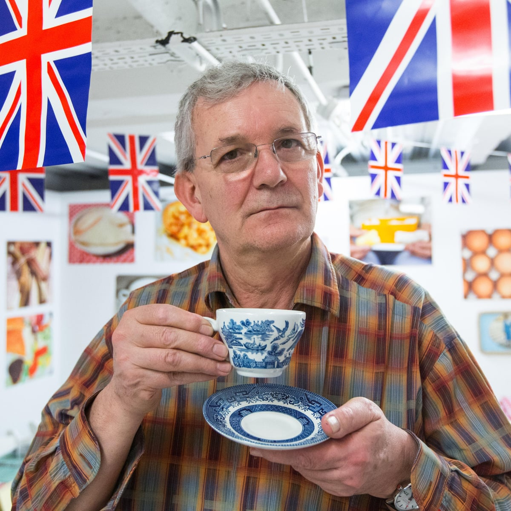

Martin Parr
Fotoreporter
Inglese
- Nascita: 23 maggio 1952 (età 68 anni), Epsom, Regno Unito
- Opere d'arte: New Brighton, British Food, ALTRO
- Luogo di esposizione: The Hepworth Wakefield, Museum of Modern Art
- Figli: Ellen Parr
- Film: Think of England, Magnum Photos: The Changing of a Myth, ALTRO
- Istruzione: Manchester Metropolitan University, Surbiton County Grammar School
Dal 1970 al 1973 Martin Parr studia Fotografia presso il Manchester Polytechnic. Da allora ha lavorato a numerosi progetti fotografici, criticando la società moderna, il consumismo, il cibo e il turismo.
Nonostante gli inizi come fotografo in bianco e nero, inizia nel 1984 a lavorare a colori, suo punto di forza. Infatti, l'uso di foto dai colori molto saturi che enfatizzano il lato buffo e umoristico nei suoi lavori, sono ormai un marchio di fabbrica. Nel 1994 diventa fotografo dell'agenzia Magnum Photos. Nella sua carriera vi è anche una parentesi musicale: la direzione del videoclip musicale London dei Pet Shop Boys nel 2003.
Dal 2004 al 2012 è stato professore presso l'Università del Galles.
- Home Sweet Home, New York, 1974
- Bad Weather, Londra, 1982
- A Fair Day. Photographs fron the West of Ireland, Wallasey, 1984
- The Last Resort, Stochport, 1998, (anche 2009)
- The Cost of Living, Manchester, 1989
- Signs of Times, Manchester, 1992
- Bored Couples, Parigi, 1993, (catalogo della mostra)
- Home of Abroad, Londra, 1993
- Small World, Stochport, 1995, (anche 2007)
- West Bay, Londra 1997
- Benidorm, Hannover 1999, (catalogo della mostra)
- Common Sense, Stochport, 1999
- Sguardi gardesani, Milano, 1999, (catalogo della mostra)
- Think of England, Londra, 2000
- Martin Parr, Londra, 2002 (anche in italiano, Contrasto, Roma)
- Martin Parr con le poesie degli alunni dell'École Vitruve di Parigi, Bonsecours, 2005
- Tutto Roma, Roma, 2006
- Parr by Parr, 2010, in Gran Bretagna, Francia ed Italia
- Up and Down Peachtree. Photographs do Atlanta, Roma, 2012
- Real Food, Londra, 2016